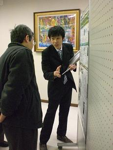

叶丸孝治

| 研究テーマ | 空間反転対称性の破れた金属表面の電子状態の研究 |
|---|---|
| 出身 | 広島県 |
| 卒業論文題目 | 空間反転対称性の破れに起因した表面超構造のスピン分裂バンドの観測 |
| 修士論文題目 | |
| 原著論文 | 準備中 |
| 受賞歴 | 1. 広島大学理学部物理科学科卒業論文発表優秀賞 (2008.3) |
| 国際学会 |
1. 学会名：13th Hiroshima International Symposium on Synchrotron Radiation 題目：Adsorbate induced spin-split band structure of the Si(111) √3×√3-Sb surface ポスター発表 場所：Higashi-Hiroshima, Japan (2009.3) 2. 学会名：12th Hiroshima International Symposium on Synchrotron Radiation 題目：Spin-split band structure of the Si(111) √3×√3-Sb surface ポスター発表 場所：Higashi-Hiroshima, Japan (2008.3) 3. 学会名：International Symposium on Surface Science and Nanotechnology (ISSS-5) 題目：Adsorbate induced spin-split band structure of the Si(111)√3x√3-Sb surface. Waseda Univeisty, Japan on November 2008, poster session |
| 国内学会 |
1. 学会名：日本物理学会 2008年秋季大会 題目：Spin- and angle- resolved photoemission spectroscopy of Si(111)√3x√3-Sb surface 場所：岩手大学 (2008.9) ポスター発表 |